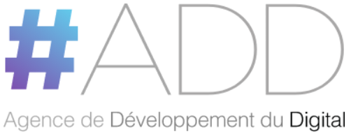

LA PREMIÈRE PLATEFORME MAROCAINE D’INTELLIGENCE POLITIQUE
Comprendre maintenant
Décider aujourd’hui
Anticiper demain
Une lecture documentée de la visibilité, des tonalités, des sujets et des relations qui structurent le débat politique marocain.
ϟExports consolidés3 périmètres documentés◎Base observée9 000 URL uniques♢Lecture traçableSources, période et exclusions précisées

PRESSE MAROCAINE2 168
OPINION CITOYENNE5 498
PARTIS & LEADERS2 060
PÉRIODE D’ANALYSE29.07 - 05.08
UNITÉ COMMUNEURL UNIQUE
TOP SOURCES | INTERNATIONAL
VOLUME QUOTIDIEN | PRESSE MAROCAINE 29.07 - 05.08
Survolez la courbe pour afficher le volume du jour
SUJETS VALIDÉS | PRESSE MAROCAINE
88MENTIONS TAGUÉES
MENTIONS FORTES VALIDÉES LIENS SOURCES
Période : 3 au 5 août 2026Traçabilité. Trois corpus distincts partagent la même unité, l’URL unique : 2 060 pour Partis et Leaders, 2 168 pour la Presse marocaine et 5 498 pour l’Opinion citoyenne. Le graphe relie les acteurs aux sujets détectés dans les deux corpus concernés, sans confondre leurs périmètres.
SOURCES LES PLUS PRÉSENTES
Classement du monitoring web
Top 10 de chaque rubrique, calculé sur URL uniques. Les acteurs sont ventilés par tonalité ; les médias conservent influence et portée lorsqu’elles sont disponibles.
#ACTEUR / SOURCEMENTIONS OBSERVÉESMENTIONSINTENSITÉ RELATIVE · MENTIONS
ÉLECTIONS LÉGISLATIVES | MAROC 2026
Political Narrative Graph
Cette cartographie relie directement chaque parti et leader à sa tonalité observée, tout en conservant le parcours acteurs, sujets du débat politique et tonalités.
Les affiliations parti-leader sont issues du référentiel validé. Toutes les autres relations représentent des fréquences sur URL uniques dans leur corpus indiqué.
7 421URL uniques retenues28nœuds documentés0relations pondérées
Périmètres reliés. 2 060 URL Partis et Leaders alimentent les relations acteurs-sujets ; 5 498 URL Opinion citoyenne alimentent les volumes et tonalités des sujets. Les recouvrements d’URL sont dédupliqués dans le total du graphe.
PARTIS POLITIQUESLEADERS POLITIQUESSUJETS DU DÉBAT POLITIQUETONALITÉS
Fréquences relationnelles. Dans l’infobulle d’un nœud, le total additionne les fréquences de ses relations visibles : tonalité directe, sujet associé ou affiliation. Il ne s’agit ni d’un score d’influence ni d’une intention de vote.
ARCHITECTURE DÉCISIONNELLE SOUVERAINE
PROCESSUS FONCTIONNEL TECHNOLOGIQUE
Veille et intelligence économiqueIntelligence artificielleBusiness IntelligenceAnalyse humaineContrôle qualité
SOURCES • VEILLE • INTELLIGENCE ÉCONOMIQUE
PRESSE ET MÉDIAS
Presse nationale et internationale, médias numériques et publications spécialisées.
RÉSEAUX SOCIAUX
Conversations publiques, contenus audiovisuels et signaux numériques accessibles.
INSTITUTIONS ET OPEN DATA
Sources institutionnelles, publications officielles et données ouvertes.
ÉTUDES, SONDAGES ET AUDIOVISUEL
Études publiques, enquêtes accessibles, rapports et contenus audiovisuels.
- FR • AR
- SOURCES PUBLIQUES
- COLLECTE CONTINUE 24H/7Aspiration et traitement continus des sources, seconde par seconde, 24 heures sur 24 et 7 jours sur 7.
- SOURCES PUBLIQUES ANALYSÉES
OSINT • DATA INTELLIGENCE
COLLECTEUR UNIQUE • CONSOLIDATION
PLATEFORME D’INTELLIGENCE POLITIQUE
De la donnée publique à l’intelligence décisionnelle
SOURCES • VEILLE • INTELLIGENCE ÉCONOMIQUE
- 01
OBSERVER
Collecter, agréger, normaliser et dédupliquer les données publiques.
- 02
COMPRENDRE
Qualifier les contenus par intelligence artificielle, veille et analyse augmentée.
IA • NLP • ANALYTICS • BI
- 03
ANALYSER
Identifier les narratifs, les acteurs, la tonalité, les tendances et les signaux émergents.
- 04
RELIER
Cartographier les cooccurrences, les écosystèmes d’acteurs et les relations documentées.
Une cooccurrence médiatique ne constitue pas à elle seule une alliance, une opposition ou une relation d’influence confirmée.
- 05
MESURER
Produire des indicateurs disponibles, séparés, traçables et documentés.
Aucun score composite n’est affiché sans données complètes et méthodologie validée.
CONTRÔLE QUALITÉ HUMAIN ET GOUVERNANCE
- 06
GARANTIR
Assurer la validation humaine, la traçabilité, l’éthique, la conformité et le contrôle qualité.
GOUVERNANCE HUMAINE CONTINUE
- Révision
- Validation
- Éthique
- Conformité
- Traçabilité
INTELLIGENCE ACTIONNABLE
HUB DE SORTIE • QUATRE PRODUITS
TABLEAUX DE BORD
Indicateurs validés, fraîcheur des données et synthèses opérationnelles.
Political Narrative Graph
Visualisation des narratifs et des cooccurrences documentées.
STRATEGIC SIGNALS
Galaxie décisionnelle, influence narrative et orbites thématiques fondées sur les indicateurs disponibles.
RAPPORTS ET AIDE À LA DÉCISION
Notes d’analyse, alertes, rapports et éléments d’aide à la décision.
PUBLICS DESTINATAIRES
Décideurs • Institutions • Partis • Leaders politiques • Médias • Journalistes • Chercheurs • Analystes • Universités • Grandes écoles
LES INDICATEURS ANALYTIQUES DISPONIBLES
STRATEGIC SIGNALS•LECTURES ANALYTIQUES BUILDFLUENCE
Intelligence politique souveraine, explicable et contrôlée humainement.
Chaque indicateur est présenté séparément avec son périmètre, sa formule et ses limites. Aucun score composite n’est produit à partir de données incomplètes.
LECTURE RESPONSABLE
Les indicateurs décrivent une présence, des tonalités et des relations dans le débat public. Ils ne mesurent jamais une intention de vote et ne constituent ni un sondage ni une prédiction électorale.
◉COMPRÉHENSIONUne lecture claire et factuelle du débat public.
◫TRANSPARENCEUne méthode sourcée et explicable.
↗ANTICIPATIONIdentifier les signaux faibles.
GOUVERNANCE ÉTHIQUE
Ce que les indicateurs mesurent, et ce qu’ils ne mesurent pas.
Sources ouvertes, contrôle qualité humain, période d’observation affichée, formules documentées et limites explicitées.
TRAÇABILITÉ DU CORPUS
Du fichier brut aux URL uniques
2 540 brutes -> 42 exclues -> 2 498 admissibles -> 438 doublons retirés -> 2 060 URL uniques
- 2 540Lignes brutes du fichier source Partis et Leaders.
- 42Lignes exclues lors du contrôle d’éligibilité des URL.
- 2 498Lignes admissibles après contrôle d’éligibilité.
- 438Doublons retirés parmi les seules lignes admissibles.
- 2 060URL uniques retenues pour les Partis et Leaders.
Règle de contrôle : lignes brutes moins lignes exclues moins doublons retirés égale URL uniques. La publication est bloquée si cette égalité n’est pas vérifiée.
POSITIONNEMENT
Sovereign Decision Infrastructure
Buildfluence construit la souveraineté décisionnelle des gouvernements, des grandes entreprises et des institutions internationales.
- 01Transformer les données et les signaux en intelligence exploitable.
- 02Comprendre les rapports de force, les risques et les dynamiques d’influence.
- 03Sécuriser les décisions en environnement complexe.
- 04Construire des dispositifs opérationnels de veille, d’analyse et d’intervention.
EXPERTISE
Strategic Intelligence
Comprendre un environnement, ses acteurs et ses signaux avant qu’ils ne deviennent des contraintes.
Soft Power & Influence
Mesurer la perception, structurer un récit et gagner en attractivité durable.
Deep Due Diligence
Documenter une contrepartie, un actif ou une opération pour maîtriser le risque avant l’engagement.
SOUVERAINETÉ DÉCISIONNELLE
TRACK RECORD CONSOLIDÉ
2015Année de démarrage de l’activité
47Missions réalisées depuis 2015
4Continents couverts
Interventions auprès de gouvernements, de grandes entreprises, d’institutions publiques et d’organisations internationales.
Trois continents couverts sur l’ensemble des missions. Aucun détail par pays n’est publié.
- Secteur public

Agence de Développement du DigitalRéférence publique représentative - Industrie stratégiqueOCP GroupRéférence publique représentative
- SantéUM6SSRéférence publique représentative
- Finance et investissementFinance et investissementRéférence confidentielle
- Organisations internationalesCIDCRéférence publique représentative
- Sport professionnelRaja Club AthleticRéférence publique représentative
Environnements exigeants, à forte sensibilité institutionnelle et réglementaire. Références publiques représentatives et non exhaustives, issues de missions documentées.
Survolez ou sélectionnez une situation pour afficher la référence.
Situations traitées lors de missions documentées. Références publiques représentatives et non exhaustives, présentées sans valeur de recommandation.
VisibilitéInfluenceAttractivitéMaîtrise du risqueCompétitivitéSouveraineté décisionnelle
EXPLORER LES SUCCESS STORIES
FONDATEUR
Azeddine Yassine
Fondateur & Managing Director
Il conduit depuis plus de vingt-cinq ans des missions d’intelligence stratégique, d’influence et de maîtrise du risque pour des gouvernements, des grandes entreprises et des organisations internationales. Il a fondé Buildfluence en 2015 pour doter les décideurs d’une infrastructure d’analyse indépendante, documentée et souveraine, capable de transformer des signaux dispersés en décisions tenables dans des environnements complexes et fortement exposés.
- Plus de 25 ans d’expérience personnelle en intelligence stratégique
- Missions conduites sur trois continents
- Interventions auprès d’États, d’entreprises et d’organisations internationales